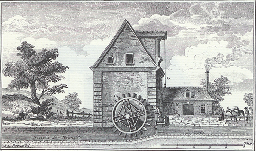
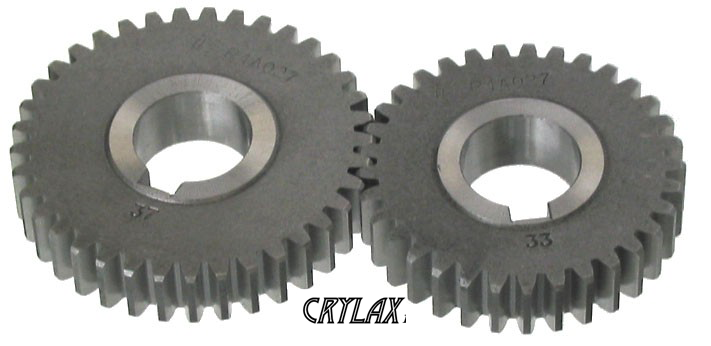
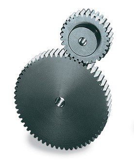
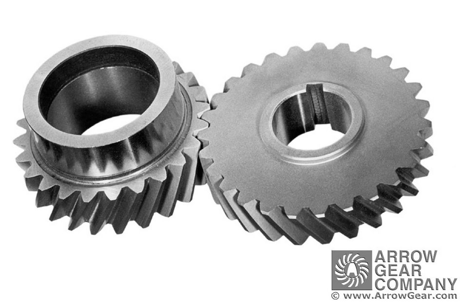
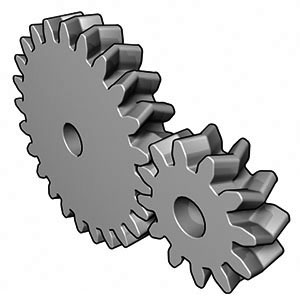
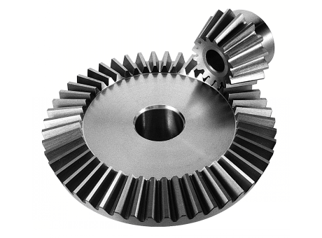
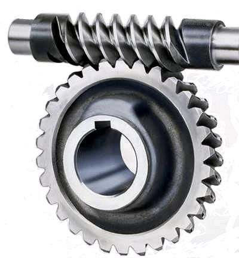
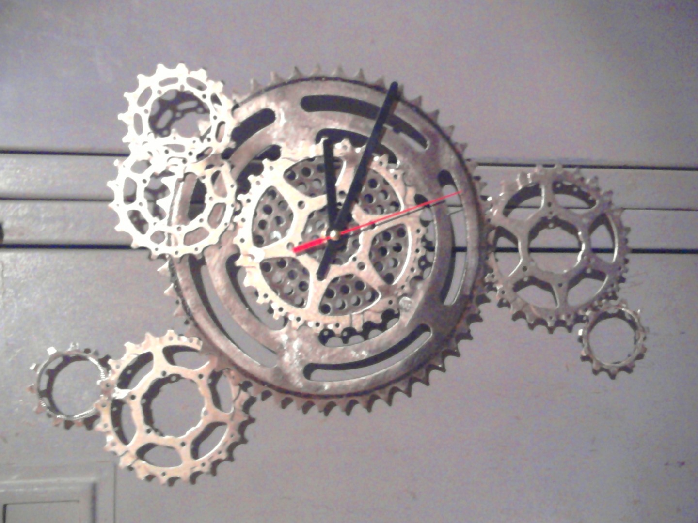
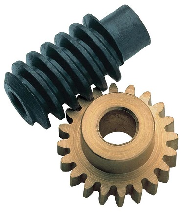
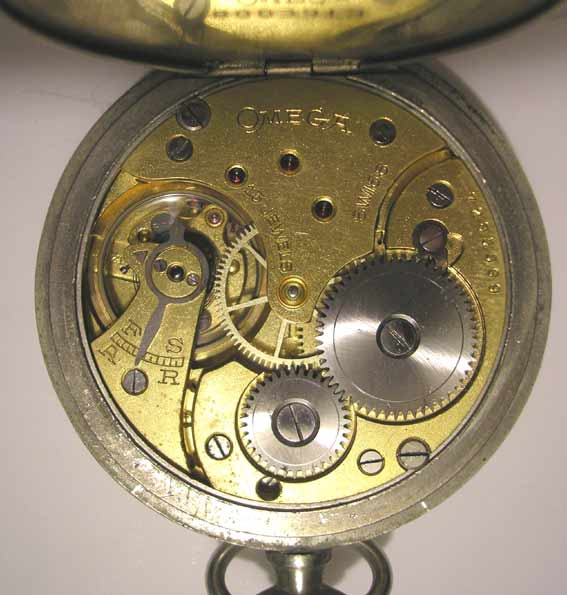

Sommaire
---------------------------------------------------------
 Definition
Definition- Historique
- Types d'engrenages
- Formules utiles
I) Definition
---------------------------------------------------------
Un engrenage est un système mécanique composé d’au moins deux roues dentées engrenées servant :
- Soit à la transmission du mouvement de rotation entre elles
- Soit à la propulsion d'un fluide (on parle alors de pompe à engrenages).
Dans le cas de la transmission de mouvement, les deux roues dentées sont en contact l’une avec l’autre et se transmettent de la puissance par obstacle. Un engrenage est composé d’un pignon, c’est la plus petite des roues. Quand plus de deux roues dentées sont présentes, on parle de train d’engrenages.
 Notez bien que cette définition est assez complète mais également assez complexe. Une description simplifiée et plus compréhensible est disponible en dessous.
Notez bien que cette définition est assez complète mais également assez complexe. Une description simplifiée et plus compréhensible est disponible en dessous.
La fonction principale des engrenages ou roues dentées est de transmettre le mouvement de rotation en changeant ses caractéristiques (réduire ou augmenter le couple moteur, inverser le sens de rotation).
II) Historique
---------------------------------------------------------
Les engrenages sont déjà connus des mécaniciens grecs aux Ve et IVe siècles av. J.-C. Ils ne sont pas très utilisés à l’époque, ils deviennent surtout populaire au moyen âge vers le Xème siècles où les Hommes commencent à construire des systèmes avec des engrenages comme par exemple : Les moulins.
Moulin à eau
Les tous premiers engrenages sont fabriqués en bois. Leurs dents sont constituées de barreaux de bois. Elle évolue à la fin du Moyen Âge sous la forme d’engrenages dits «à lanterne », composés d’une roue dentée s’engrenant dans un tambour formé de deux disques en bois reliés par des barreaux capables de transmettre des efforts plus importants.

Engrenage à lanterne
Ces premiers engrenages conviennent aux mouvements lents des moulins, car ils peuvent transmettre des efforts importants. Ils se perfectionnent au XVe siècle grâce aux ingénieurs italiens, comme Francesco di Giorgio ou Léonard de Vinci, qui étudient les premiers engrenages complexes en bois. L’engrenage métallique, plus précis et plus facilement utilisable, se généralise d’abord au XVIIe siècle dans la petite mécanique et l’horlogerie grâce aux travaux de La Hire, ou d’Euler au siècle suivant, puis connaît son essor définitif avec l’apparition de machines puissantes et rapides au XIXe siècle et les travaux de Poncelet ou de Willis.
Comme vous pouvez le voir l'engrenage à était inventé il à très longtemps mais reste encore un outil très utilisé dans de nombreux système. Des exemple seront disponibles plus loins dans le cour.
III) Types d'egrenages
---------------------------------------------------------
- Les engrenages droits
- Les engrenages droits à dentures droites
- Les engrenages droits à denture hélicoïdale
- Les engrenages droits à denture à chevrons
- Les engrenages conique
- Les engrenages à vis sans fin
Ce type d’engrenages permet de transmettre un mouvement de rotation et la puissance entre deux arbres parallèles. On classe ce type d’engrenage par la forme et la géométrie de leur denture.
Ce sont les plus simples et les plus économiques des engrenages, c’est ce type d’engrenages que nous retrouvons dans les transmissions de nos crawlers
Comme les engrenages à denture droite, ils transmettent le mouvement de rotation et la puissance entre deux arbres parallèles, mais leurs dents sont inclinées. Cette configuration est plus performante et offre une plus grand progressivité et continuité d’engrènement, qui permet de transmettre plus de couple, tout en étant plus silencieux.
C’est une variante des engrenages droits à denture hélicoïdale, où les dents forment des chevrons. Cette configuration encore un peu plus complexe, permet d’annuler les efforts latéraux des dentures hélicoïdale, tout en conservant leurs avantages
Les engrenages coniques sont utilisés pour transmettre un mouvement de rotation entre deux arbres non parallèles, le plus souvent perpendiculaires
Les engrenages à vis sans fin ou gauche permettent de transmettre un mouvement de rotation entre deux axes perpendiculaires et non-concourants. Les engrenages à vis sans fin sont principalement utilisés comme réducteur, ils permettent d’obtenir un fort rapport de réduction ( jusqu’à 1/200 ) avec un encombrement réduit
Il existe une multitude d'engrenage, l'utilisation de ces différents types d'engrenage dépend de la situation et de la problèmatiqyue qui s'impose lors de la confection du système
-----------------------------------------
IV) Utilité dans la vie courante
-----------------------------------------
Voici quelques exemples de l'utilisation des engrenages dans la vie courante
 <------- Engrenage d'un lecteur cd d'un ordinateur
<------- Engrenage d'un lecteur cd d'un ordinateur
 <------- Mécanisme d'une horloge
 <------- Mécanisme guitare
 <------- Mécanisme montreV) Formules utiles
---------------------------------------------------------
Comme son nom l'indique, « un train d'engrenages » est composé de plusieurs engrenages — et non pas seulement une roue motrice et une roue entrainée. La première roue reste la roue motrice et c'est la dernière du train qui est la roue entrainée. Les engrenages intermédiaires sont soit des pignons « fous » soit des pignons de vitesse. Ces derniers servent soit à inverser le sens de rotation soit à connecter deux pignons qui ne pourraient pas fonctionner sans ce dispositif
D = m.Z
---->
m = D/Z
---->
Z = D/m
----> D = diametre primitif (mm) | Diametre de la roue + mi chemin des dents.
----> M = Module en mm
----> Z = Nombre de dents
P = Pi . m
---->
m = P/Pi
----> P = Pas
----> Pi = 3.14
----> M = Module en mm
A = m(Z1 + Z2) / 2
---->
(Z1 + Z2) = (A * 2) / m
---->
m = (A * 2) / (Z1 + Z2)
----> a = Entraxe en mm(Distance entre l'axe des deux roues)
----> M = Module en mm
----> Z1 = Nombre de dents première roue
----> Z2 = Nombre de dents deuxième roue
R = (-1)n * Z1menant * Z2menante * Z3menante.../Z1menée * Z2menée * Z3menée...
----> R = Rapport de transmission
----> Z = Nombre de dents
----> N = Exposant = Nombre de roues menée
η = Ps/Pe
---->
Pe = Ps/η
---->
Ps = η * Pe
....> η = Rapport de réduction
....> Ps = Puissance sortie
....> Pe = Puissance entrée
I = ηsortie/ηentrée = Wsortie/Wentrée
....> W = rad/s
....> η = Rapport de réduction
....> I =
Attention ! Pour R = (-1)N * Z1menant * Z2menée * Z3menée.../Z2menée * Z3menée * Z4menée... Une roue n'est pas forcément menante ou menée, elle peut être les deux ! De plus deux roues peuvent être connectée sans se toucher, et dans ce cas, aucune ne mène l'autre il faut faire attention
VI) Sens de rotation d'un système et réducteur ou multiplicateur
-----------------------------------------------------------------------------------------------------------------
Il faut savoir qu'un train d'engrenage à une entrée et une sortie, c'est le cas pour le sens de rotation. Un train d'engrenage peut avoir le même sens de rotation en entrée et sortie. Mais peut également être inversé. Pour savoir cela, on utilisera la formule R = (-1)n * (Zmenante1 * Zmenante2.../Zmenée1 * Zmenée2...) vue plus haut. Plus précisement, ici c'est le (-1)n qui nous intéresse. On remplacera "n" par le nombre de roue menante. Si le résultat vaut 1, alors le sens de rotation sera le même en entrée qu'en sortie. Dans le cas contraire si le résultat vaut -1, alors le sens de rotation sera inversé.
Un train d'engrenage peut être multiplicateur ou régulateur, ça signifie qu'il peut soit augmenter le couple en sortie par rapport à celui d'entrée, soit le diminuer suivant le résultat souhaitée et le système utilisé. Pour savoir si un train est multiplicateur ou réducteur il faut faire utiliser la formule
R = (-1)n * (Zmenante1 * Zmenante2.../Zmenée1 * Zmenée2...) Si le résultat est plus grand que 1 alors le train sera multiplicateur, si il est infèrieur à 1 il sera réducteur
Attention ! Nous vous avons dis que si R est négatif alors le sens de rotation entre l'entrée et la sortie change mais également que si R < 1 alors le train est réducteur. Mais il faut faire gaffe car R peut être négatif et être multiplicateur ! Pour être réducteur R doit être compris entre -1 et 1.
Resumé :
"n" dans (-1)n = Nombre de roue menante
(-1)n = 1 -----> Même sens de rotation en entrée et en sortie
(-1)n = -1 -----> Sens de rotation inversée entre l'entrée et la sortie
R = (-1)n * (Zmenante1 * Zmenante2.../Zmenée1 * Zmenée2...) supérieur à 1 ou -1 -----> Multiplicateur
R = (-1)n * (Zmenante1 * Zmenante2.../Zmenée1 * Zmenée2...) ----> [-1 ; 1] -----> réducteur
----------------------------------------------
Le cour est désormais terminé ! Vous pouvez à présent passer aux exercices